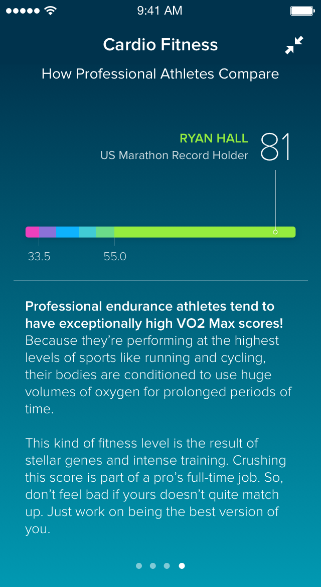
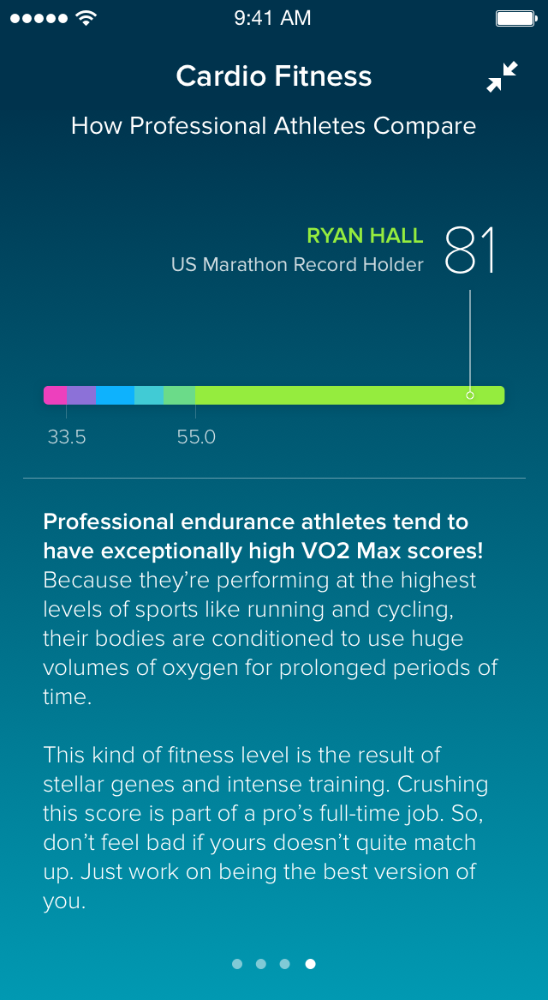
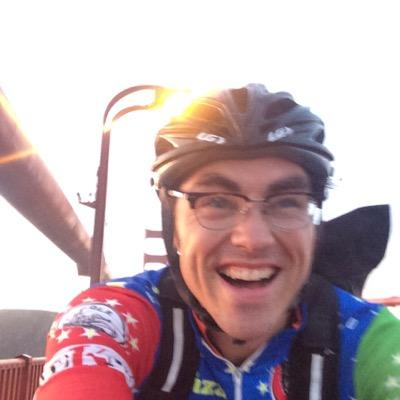

Alan McLean
wants to put health and wellness within reach
He designs health and fitness experiences that feel personal and inspire action. Working at the intersection of design and engineeering, he conceptualizes, prototypes and refines new products for Fitbit. Previously he's designed and built exercise visualizations at Strava and interactive graphics in the New York Times Graphics Department.
Twitter GithubFitbit
Cardio Fitness Scores

 

Research · Product Design · Visual Design
Our goal with this addition to the Fitbit fitness ecosystem was to make an awkaward and slow moving number, V02Max, feel a little more accessible. We accomplished this by introducing normative categories for demographic groups and demonstrating how you could change it. I led the design of this feature from the initial research, product and visual design to final execution.
Fitbit
Reminders to Move - Prototyping UX Explorations
Product Design · Prototyping · Visual Design
Reminders to Move encourages users to increase activity and reduce sedentary time through the day. Working with another Product Designer, Visual Designer and Algorithm designer, I helped explore ways of delivering a positive user experience with potentially negative information. I designed and built numerous live prototypes with real data to help inform the design direction that ultimately ended up in users hands.
Fitbit
SmartTrack and Weekly Goals
Research · Product Design · Visual Design · Prototyping
The goal of the SmartTrack project was to enable a seamless exercise tracking experience while still providing emotional touchpoints to keep users engaged. Smarttrack allowed Fitbit to automatically detect activities like running and cycling, and weekly goals helped ensure there was a meaningful artifact of that frictionless activity capture. I helped define the user experience through extensive user research, experimentation and visual design.
Strava
Athlete Training Log

Research · Product Design · Visual Design · Engineering
The Strava Training Log is an interactive data visualization of an athlete's training that enables users to track training and find notable workouts and races. I led the user experience design and engineering, performing numerous user interviews, building prototypes and delivering the final product to users.
New York Times
The Guantanamo Docket - A History of the Detainee Population
Visual Design · Engineering · Reporting
New York Times
Women in the Senate
Visual Design · Engineering · Reporting
New York Times
The Marathon Route’s Evolving Neighborhoods
Visual Design · Engineering · Reporting · Video Editing
New York Times
A Simple Bicycle Race


Visual Design · Engineering · Reporting · Video Editing
New York Times
Election 2012 – Swing State Tracker

Visual Design · Editing · Engineering ·
New York Times
Girls Lead in Science Exam, but Not in the United States

Visual Design · Editing · Engineering ·
New York Times
Snowfall

Editing · Engineering ·
Who is this guy?
If I could, I'd be on a bike right this instant. Aside from my love of cycling, I was drawn back to the west coast to work on health technology. I'm a type 1 diabetic and spend considerable time experimenting with my insulin pump and CGM via the OpenAPS source code. I studied printmaking in school but somehow ending up designing and writing more code than etching on zinc plates.
Recognition and Awards
- Malofiej Infographic World Summit 2012 – Best in Show – The Guantanamo Docket
- Society of News Design – Selected Inforgraphics - Gold, Silver and Bronze
- Knight Batten Grand Prize 2009, Document Viewer/Collected Works